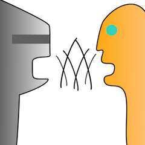

NetworkedLearningChatbot
 This is a networked chatbot that learns from people as they talk to it. It is written to work over LAN, with one computer as a server, and any number of clients connecting to it. It is written in Python 3. There is also a Mac '.app' version of the client that doesn't require Python 3 to be installed.
If you just want to download the Client or Server for your platform, you can find them under "PeterMaar-NetLrnChatBot/Distribute/PeterMaarNetworkedChatClient" either on the GitHub project, or in the downloaded archive.